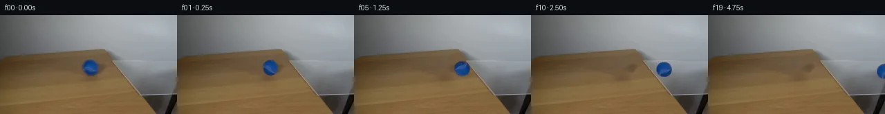
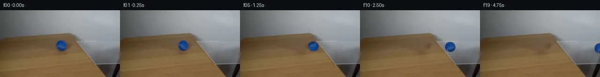
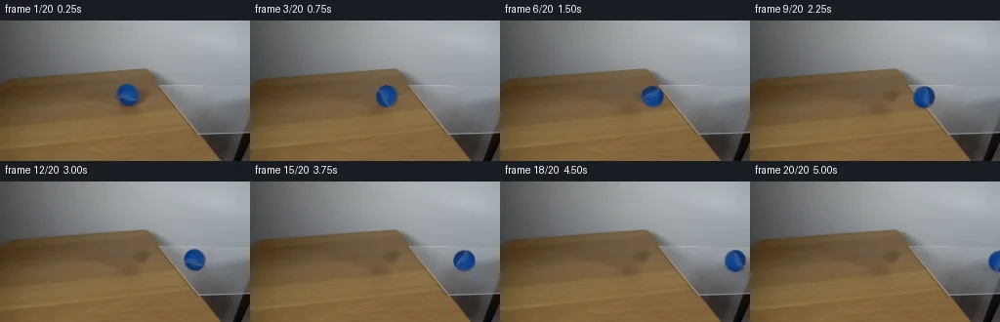
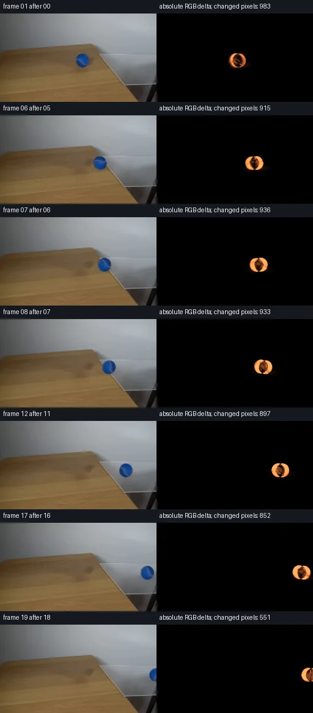

初版 V0
![]()
Observable Generation Trace
把最终像素视频、Harness 冻结的每轮候选、真实工具事件和 Agent 自述放在同一页。可观测证据与模型自述分开标记，避免把“模型说它检查过”误当成真实工具调用。
![首帧]()
Static locked-off single-shot with fixed frame throughout filmed with constant framerate in real-time. The scene shows a realistic scientific demonstration. The scene only contains the described setup and actions. A piece of clear glass resting on the edge of a light-colored wooden table against a plain white wall. The blue tennis ball rolls from the wooden table over the glass.
首帧显示在左侧播放器初始画面。Track 权限、隔离和 tensor 一致性来自 run manifest，而不是 METHOD.md。
上方并排显示初版和最终版，默认同步播放；下方每个版本可独立播放，也可勾选加入同步播放。仅检查图更新的连续重复快照已合并，回退旧视频仍保留为一次修订。
Observable events
来源：events.jsonl + run manifest
此 Track 禁止读取输出图片。逐轮预览由外部 Harness 自动冻结，只用于事后审计，生成 Agent 当时看不到这些页面。
Frozen candidates
每张图来自该 round 的真实 00 / 01 / 05 / 10 / 19 帧

pixels 6f40d101534b30ca · code 07ef6b5065f409ab
--- previous/generate.py +++ current/generate.py @@ -0,0 +1,195 @@ +#!/usr/bin/env python3 +"""Generate a local-pixel continuation of the supplied PixelWorld first frame.""" + +from pathlib import Path + +import cv2 +import numpy as np +from PIL import Image, ImageDraw, ImageFont + +import artifact_io + + +ROOT = Path(__file__).resolve().parent +SOURCE = ROOT / "first_frame.png" +W, H = 256, 144 + + +def smoothstep(edge0, edge1, value): + t = np.clip((value - edge0) / (edge1 - edge0), 0.0, 1.0) + return t * t * (3.0 - 2.0 * t) + + +def build_clean_plate(source): + """Remove the original ball and its compact shadow by local inpainting.""" + yy, xx = np.mgrid[0:H, 0:W] + # A slightly asymmetric mask includes the contact shadow below the ball. + remove = (((xx - 131.0) / 14.2) ** 2 + ((yy - 77.2) / 14.0) ** 2) <= 1.0 + remove |= (((xx - 132.0) / 13.8) ** 2 + ((yy - 83.0) / 7.0) ** 2) <= 1.0 + mask = (remove.astype(np.uint8) * 255) + # Telea reconstruction uses only nearby pixels from the same wooden surface. + plate = cv2.inpaint(source, mask, 3.0, cv2.INPAINT_TELEA) + + # Restore subtle horizontal wood grain through the reconstructed area. The + # residual is sampled from adjacent unobstructed wood, so it shares the source + # frame's compression/noise scale without importing external texture. + for y in range(62, 93): + x0, x1 = 117, 147 + left = source[y, 101:116].astype(np.float32) + right = source[y, 148:163].astype(np.float32) + residual = np.concatenate([left - cv2.GaussianBlur(left[None], (5, 1), 0)[0], + right - cv2.GaussianBlur(right[None], (5, 1), 0)[0]], axis=0) + if len(residual): + pattern = residual[np.arange(x1 - x0) % len(residual)] + plate[y, x0:x1] = np.clip(plate[y, x0:x1].astype(np.float32) + 0.30 * pattern, + 0, 255).astype(np.uint8) + return plate + + +def extract_ball_rgba(source, plate): + """Unmatte the original ball against the reconstructed local wood.""" + x0, y0, size = 116, 61, 31 + observed = source[y0:y0 + size, x0:x0 + size].astype(np.float32) + background = plate[y0:y0 + size, x0:x0 + size].astype(np.float32) + yy, xx = np.mgrid[0:size, 0:size] + radius = np.hypot(xx - 15.0, yy - 15.0) + radial_alpha = 1.0 - smoothstep(10.1, 12.15, radius) + + # Blue dominance keeps the soft photographed silhouette and suppresses any + # reconstructed wood that lies inside the square crop. + dominance = observed[..., 2] - 0.5 * (observed[..., 0] + observed[..., 1]) + chroma_alpha = smoothstep(7.0, 36.0, dominance) + alpha = np.clip(np.maximum(chroma_alpha, 0.88 * radial_alpha) * radial_alpha, 0, 1) + + # Undo the edge mixture with the local plate to avoid a brown fringe when the + # ball reaches the gray glass. + safe = np.maximum(alpha[..., None], 0.16) + foreground = (observed - (1.0 - alpha[..., None]) * background) / safe + foreground = np.clip(foreground, 0, 255) + + rgba = np.zeros((size, size, 4), dtype=np.uint8) + rgba[..., :3] = foreground.astype(np.uint8) + rgba[..., 3] = np.round(alpha * 255).astype(np.uint8) + return Image.fromarray(rgba, "RGBA") + + +def alpha_composite_rgb(base, overlay_rgba, x, y): + """Composite an RGBA PIL sprite into a uint8 RGB array, allowing clipping.""" + rgba = np.asarray(overlay_rgba).astype(np.float32) + oh, ow = rgba.shape[:2] + bx0, by0 = max(0, x), max(0, y) + bx1, by1 = min(W, x + ow), min(H, y + oh) + if bx0 >= bx1 or by0 >= by1: + return + ox0, oy0 = bx0 - x, by0 - y + ox1, oy1 = ox0 + (bx1 - bx0), oy0 + (by1 - by0) + src = rgba[oy0:oy1, ox0:ox1, :3] + alpha = rgba[oy0:oy1, ox0:ox1, 3:4] / 255.0 … diff truncated; 108 more lines …

pixels f349529a71d28905 · code 858d28915c0644cb
--- previous/generate.py
+++ current/generate.py
@@ -95,6 +95,10 @@
# The source light is soft and the contact shadow falls down and slightly right.
sx, sy = cx + 1.3, cy + 7.0
ellipse = np.exp(-0.5 * (((xx - sx) / 8.0) ** 2 + ((yy - sy) / 2.7) ** 2))
+ # Truncate imperceptible Gaussian tails. Besides being physically more local,
+ # this guarantees that static wall/table pixels far from the contact remain
+ # bit-identical across the continuation.
+ ellipse[ellipse < 0.025] = 0.0
# Glass transmits light, making its shadow a little weaker than on opaque wood.
strength = 0.115 if on_glass else 0.17
factor = 1.0 - strength * ellipse[..., None]pixels f349529a71d28905 · code 52ad1abf986c047e
--- previous/generate.py
+++ current/generate.py
@@ -70,7 +70,7 @@
rgba = np.zeros((size, size, 4), dtype=np.uint8)
rgba[..., :3] = foreground.astype(np.uint8)
rgba[..., 3] = np.round(alpha * 255).astype(np.uint8)
- return Image.fromarray(rgba, "RGBA")
+ return Image.fromarray(rgba)
def alpha_composite_rgb(base, overlay_rgba, x, y):Final visual checks
Harness 保存的最终产物


Agent claims
以下文字由生成 Agent 撰写，不等同于工具证据
| Frame | Center target (approx.) | Event |
|---|---|---|
| 00 | (131, 76) | Exact unmodified source frame; ball rests/has just begun rolling on wood. |
| 01 | (135, 76) | First small rightward displacement; rotation begins. |
| 02 | (140, 77) | Rolling steadily on wood. |
| 03 | (145, 77) | Continues toward glass, compact soft shadow follows. |
| 04 | (151, 77) | Approaches the diagonal boundary. |
| 05 | (157, 78) | Ball remains on wood, nearly at the pane. |
| 06 | (164, 78) | Leading edge reaches/crosses onto glass. |
| 07 | (171, 78) | Ball straddles the wood-to-glass boundary. |
| 08 | (178, 79) | Center is over the clear glass; background/reflections stay locked. |
| 09 | (185, 79) | Fully supported by the pane, rolling right. |
| 10 | (192, 79) | Steady glass traverse; rotating surface markings make rolling legible. |
| 11 | (199, 80) | Continues over glass with a slightly lighter/translucent contact shadow. |
| 12 | (206, 80) | Mid-to-late glass traverse. |
| 13 | (213, 80) | Clear separation from the diagonal boundary behind it. |
| 14 | (220, 81) | Nears the image's right side, still on pane. |
| 15 | (227, 81) | Rolling continues at natural near-constant speed. |
| 16 | (234, 81) | Ball approaches the frame edge. |
| 17 | (241, 82) | Ball begins to clip against the right frame edge. |
| 18 | (248, 82) | Most of the ball is leaving the shot. |
| 19 | (255, 82) | Ball center reaches the right border, leaving about half the ball visible; glass and table remain unchanged. |
The continuation will be made by local pixel operations only: build a clean static plate by locally reconstructing the ball's original wooden background, extract the source ball into a soft circular sprite, rotate and translate that sprite along the measured path, and synthesize a small surface-dependent contact shadow. No camera movement or external visual source is used.
The animation was generated entirely with local Python pixel operations from first_frame.png. No external images, masks, models, engines, network resources, or other cases were used.
angle = -distance / 10.8 px, and translated with bicubic resampling. A compact Gaussian contact shadow follows underneath. Its strength decreases from 17% on wood to 11.5% on transparent glass, and its tiny tails are truncated so distant background pixels remain exactly static.artifact_io.save writes the 20 PNGs, packed uint32 tensor, inspection sheet, and standalone HTML player. A separate transition sheet pairs selected later frames with fixed-scale absolute RGB-difference maps.Generated later frames were not opened with an image Read/View tool. They were evaluated only through local code and numeric checks:
frames/00.png is pixel-identical and PNG-byte-identical to first_frame.png.pixels.npz array has shape 144 x 256 x 20 and dtype uint32. Every packed 0xRRGGBB value matches every corresponding PNG pixel exactly.inspection.png and transition_check.png are output artifacts for downstream review; they were generated but not visually inspected here, in accordance with the task restriction.